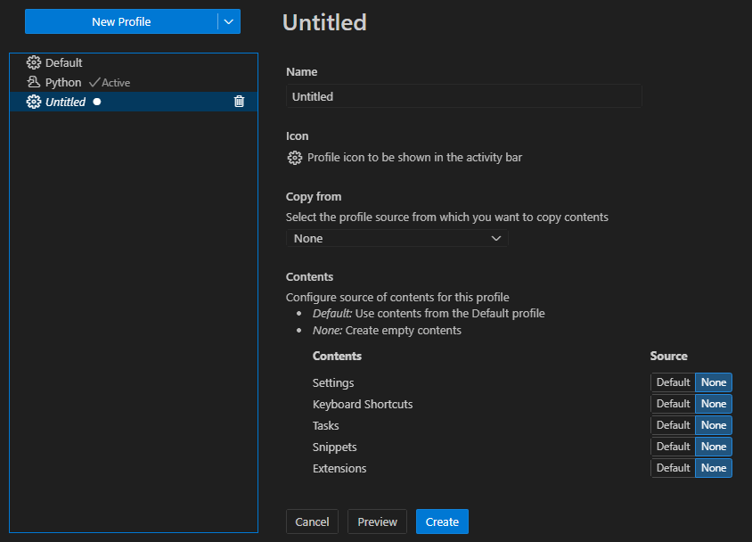
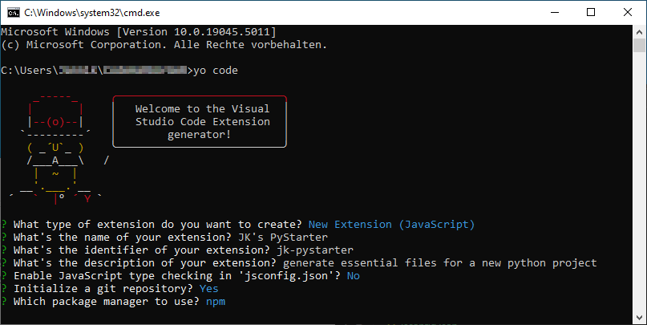

VS Code
Profile
Neues Profil über die Command Pallete erstellen:

Eigene Extension
Official Documentation: https://code.visualstudio.com/api/get-started/your-first-extension
Prequirements:
- Node.js installed
Installation:
Create Code Base:
Setup Konfiguration

Developing the extension
Inside the editor, open extension.js and press F5 or run the command Debug: Start Debugging from the Command Palette (Ctrl+Shift+P). This will compile and run the extension in a new Extension Development Host window.
Run the Hello World command from the Command Palette (Ctrl+Shift+P) in the new window.
Now:
- Change the code inside the
extension.js - Run Developer: Reload Window in the new window.
- Run your command (default: Hello World)
Beispiel
extension.js
const vscode = require('vscode');
const fs = require('fs');
const path = require('path');
/**
* @param {vscode.ExtensionContext} context
*/
function activate(context) {
// Command zur Erstellung der Template-Dateien registrieren
let disposable = vscode.commands.registerCommand('pythonTemplate.createFiles', function () {
// Hol den aktuellen Workspace-Ordner
const workspaceFolders = vscode.workspace.workspaceFolders;
if (!workspaceFolders) {
vscode.window.showErrorMessage("Bitte öffne einen Ordner in VS Code, um das Template zu erstellen.");
return;
}
// Der Pfad zum Workspace
const rootPath = workspaceFolders[0].uri.fsPath;
// Erstelle .gitignore, falls nicht vorhanden
const gitignorePath = path.join(rootPath, '.gitignore');
if (!fs.existsSync(gitignorePath)) {
fs.writeFileSync(gitignorePath, 'venv/\n__pycache__/\n*.pyc\n');
} else {
vscode.window.showWarningMessage(".gitignore existiert bereits.");
}
// Erstelle README.md, falls nicht vorhanden
const readmeTargetPath = path.join(rootPath, 'README.md');
if (!fs.existsSync(readmeTargetPath)) {
const readmeTemplatePath = path.join(context.extensionPath, 'README_template.md');
let readmeContent = fs.readFileSync(readmeTemplatePath, 'utf-8');
fs.writeFileSync(readmeTargetPath, readmeContent);
} else {
vscode.window.showWarningMessage("README.md existiert bereits.");
}
// vscode.window.showInformationMessage("Template Dateien wurden erstellt!");
});
context.subscriptions.push(disposable);
}
// This method is called when your extension is deactivated
function deactivate() {}
module.exports = {
activate,
deactivate
}